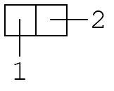
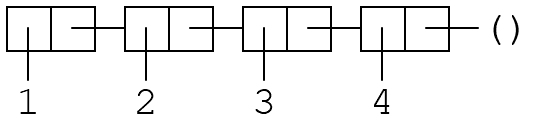
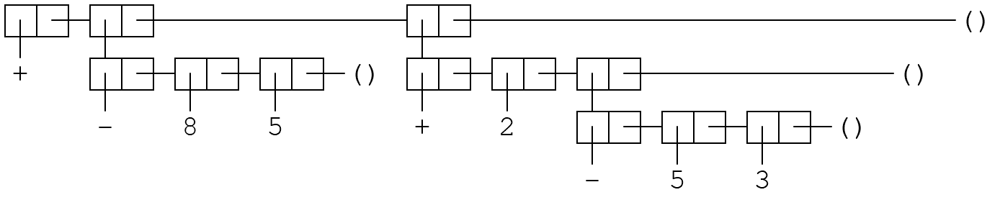
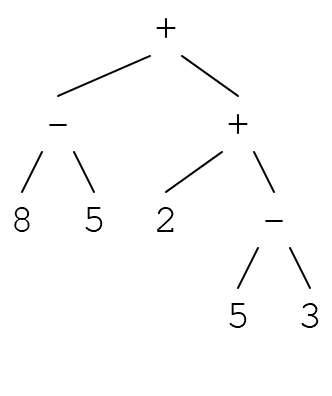

3 Fixing the calculator
Should open the 0-start-calculator.rkt-file in DrRacket.
3.1 Working with a file in DrRacket
Click the -button, or press F5. DrRacket runs the file and the window kind of splits in two.
The bit above is the Definitions bit. The contents of the file goes in Definitions; if we save the file it’s the stuff in Definitions that will be saved.
The bit below is the Interactions bit. This is like a REPL. We can write Racket expressions here and have them evaluated. The Definitions are made available for Interactions whenever we Run the file.
There’s a failing test. We’ll get back to that.
For now, try to run some expressions in Interactions. Maybe some of these:
(+ 2 3)
(evaluate '(+ 2 3))
(repl)
3.2 The calculator-code
There’s some stuff going on...
(define (eval-exp exp) (match exp [(? number?) exp] [(list '+ args ...) (apply + (map eval-exp args))] [(list '- args ...) (apply - (map eval-exp args))] [(list '* args ...) (apply * (map eval-exp args))] [(list '/ args ...) (apply * (map eval-exp args))] [_ (error 'wat (~a exp))]))
(define (evaluate input) (eval-exp input))
(define (repl) (printf "> ") (define input (read)) (unless (eof-object? input) (define output (evaluate input)) (printf "~a~n" output) (repl)))
3.2.1 define
The first define-form defines a function called eval-exp that takes one argument, exp. For now, the eval-exp-function is the most important piece of code. It is for evaluating an expression and returning the result.
3.3 Pairs, lists
We can create a pair with "cons":
(cons 1 2)
Sometimes we draw pairs like this:

We draw the second element to the right like that because we like making lists by linking together pairs.
either the special "empty list" value, '()
or a pair where the first element is the first element in the list and the second element is the rest of the list.
So a list with the numbers 1, 2 and 3 we can build one with cons, or we can use the more convenient function list. All of these are pretty equivalent:
(cons 1 (cons 2 (cons 3 (cons 4 '()))))
(list 1 2 3)
(cons 1 (list 2 3))
(cons 1 (cons 2 (list 3)))
So like:

3.3.1 Quoting
The following is a regular Racket-expresssion:
(+ 1 2)
It is the application of the function + to the arguments 1 and 2.
We can “quote” a term:
'(+ 1 2)
This is not a function application. It evaluates to a list with three elements: The symbol '+, the number 1, and the number 2.

So we can “quote” a term in order to get the syntax of the term as a data object. Try out the following expressions in the REPL, and notice the differences.
(+ 1 2)
'(+ 1 2)
(list + 1 2)
(list '+ 1 2)
If you would like to check if two values are equal to each other, the function equal? is handy.
The quoted term can be pretty arbitrary and nested and stuff.
'(+ (- 8 5) (+ 2 (- 5 3)))

As the quoted terms become more complicated, the visualisations with the boxes and the lines and such becomes, uh, a bit much. We are going to think of lists like these as programs that our evaluator can evaluate. Programs are kind of trees:

3.3.2 evaluate, repl and Racket’s read function
The programs we will evaluate with our evaluator are data objects like the ones we get by quoting Racket terms. So we can write terms that are like regular Racket terms, quote them and pass them to our evaluator:
(evaluate '(+ 1 2))
(equal? '(+ 1 2) (list '+ 1 2))
The repl-function is a Read-Eval-Print-Loop. It uses the read-function to read a Racket term. read reads a Racket term and returns a data object, same as we would get if that term was quoted in a regular Racket program. repl then evaluates, printfs the result, and, by calling itself recursively, loops.
So we can use the repl-function to get a repl for the language we are making. Nice to have, can be fun to play around with. (But we will usually call evaluate directly, with quoted Racket terms, when testing the evaluator during the workshop.)
3.3.3 match
Inside the eval-exp-function there is a match-form. match is used for pattern matching. It matches exp against a series of patterns, and evaluates some “body”-code for the first pattern that matches. Each “clause” consists of a pattern and some “body”-code. So:
The pattern (? number?) matches if exp is a number (if the number?-function returns true when applied to exp. If it matches, eval-exp will return (the number) exp.
The pattern (list '+ args ...) matches if exp is a list where the first element is the symbol '+. If it matches, (apply + (map eval-exp args)), with args bound to the rest of the exp-list, will be evaluated. eval-exp will return result.
The pattern (list '- args ...) matches if the exp is a list where the first element is the symbol '-. If it matches, (apply - (map eval-exp args)), with args bound to the rest of the exp-list, will be evaluated. eval-exp will return result.
And so on.
_ matches whatever. If none of the patterns above match, this one will, and we will throw an error.
3.3.4 apply
In most of the pattern matching clauses, we use the apply-function. apply is a function application function. If a function takes several arguments, and we have the arguments we want to apply it to in a list, we can use apply.
Like, normally we apply the +-function like so:
(+ 1 2 3)
If we have a list lst with numbers:
(define lst (list 1 2 3))
Then we cannot apply + directly to the lst-list. + can be applied to severl number-arguments, not one list-with-several-numbers-argument. But we can use apply:
(apply + lst)
3.4 Making the test pass
Lets’s make the failing test pass:
Quickest way to get back to the failure is to run (F5) the file again.
DrRacket should highlight the failing test in the definitions window, or we can click on the in the REPL to highlight it again.
We can stare at the failing test and at the eval-exp-code for a little while.
And then fix.
3.5 Done?
Next is Lookup in the environment. We can keep using the Racket-file we’re working with, or skip to 1-fixed-calculator.rkt.